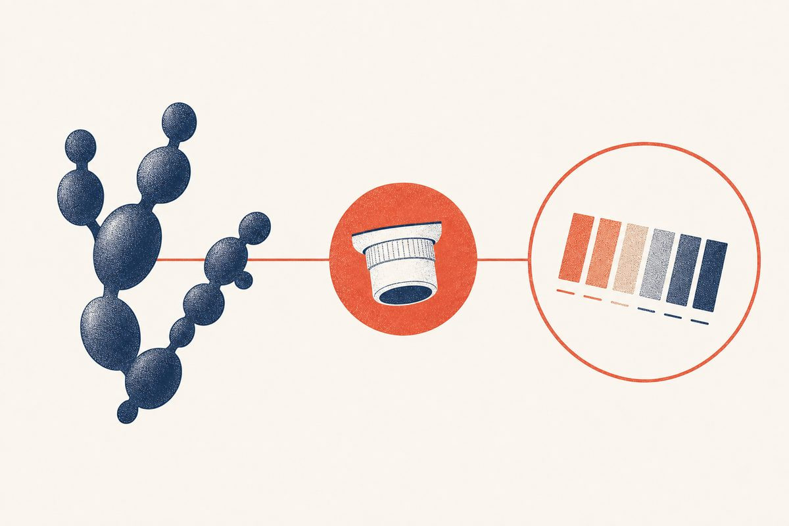

Key Takeaways
- The hallmark symptoms are vulvar itching, vaginal soreness, burning when urine touches irritated skin, pain with sex, and a thick, curd-like discharge.[1]
- An estimated 75 percent of women have at least one episode,[1] and Candida albicans causes more than 90 percent of cases.[8]
- Recognized risk factors include antibiotics, poorly controlled diabetes, pregnancy and other high-estrogen states, and immune suppression.[7]
- A normal vaginal pH below 4.5 plus yeast seen on microscopy or grown in culture supports the diagnosis and helps separate yeast from bacterial vaginosis.[1]
- Self-diagnosis is unreliable: in one study, only about a third of women buying an over-the-counter yeast treatment actually had a yeast infection.[5]
- Recurrent infection (three or more episodes in under a year, by CDC's definition) affects under 5 percent of women by CDC's estimate and calls for testing and a look for underlying causes such as diabetes.[1]

Vaginal symptoms are among the most common reasons people seek care, and the single biggest barrier to effective treatment is that several different conditions feel almost identical. What one person calls a yeast infection may in fact be bacterial vaginosis, irritation from a product, vulvar skin disease, or the dryness that comes with menopause. This guide focuses on what a vaginal yeast infection actually is, the symptoms and causes, and the steps a clinician takes to be sure.
What Is a Vaginal Yeast Infection?
A vaginal yeast infection, or vulvovaginal candidiasis (VVC), is inflammation of the vulva and vagina caused by overgrowth of Candida, a yeast that lives harmlessly in the vagina of many healthy women.[7] Candida can switch between a round yeast form and thread-like (hyphal) forms, and this filamentation helps it invade tissue.[7]
It is important to place the term carefully. VVC is a localized infection of the vulva and vagina. It is not the same as Candida infection elsewhere, such as balanitis, the red, itchy rash on the glans of the penis that a minority of male partners develop.[1] Although it is localized, VVC can cause significant symptoms and severely affect quality of life.[7]
It is very common. CDC estimates that 75 percent of women will have at least one episode and 40 to 45 percent will have two or more.[1] Estimates for the recurrent form depend on how it is defined. CDC defines recurrent VVC as three or more episodes in under a year and estimates that it affects under 5 percent of women,[1] while in a six-country internet survey 9 percent of women overall reported a 12-month period with four or more infections.[3] A global systematic review estimated that recurrent vulvovaginal candidiasis affects about 138 million women each year.[4]
Symptoms
Typical symptoms include itching, soreness, burning when urine touches the skin, pain with sex, and abnormal discharge, though none of them is specific to VVC:[1]
- Itching (pruritus) of the vulva and vagina
- Burning of the vulva and vaginal opening, sometimes felt with urination as urine contacts inflamed skin
- Thick, curd-like discharge, often compared to cottage cheese
- Redness, swelling, and irritation of the vulva (erythema and edema), which can progress to small fissures or excoriations
- Pain during sex (dyspareunia) and general soreness
Odor is a useful clue. A fishy (amine) odor suggests bacterial vaginosis or trichomoniasis, and trichomoniasis can cause a yellow-green, sometimes foul-smelling discharge.[1] In an emergency department study, a watery discharge or an amine odor pointed toward a diagnosis other than yeast, although no single clinical sign was very accurate.[6]
How Severe Is It
CDC guidelines divide VVC into uncomplicated and complicated categories, based on how it presents, the organism, host factors, and response to therapy.[1]
- Uncomplicated: sporadic or infrequent, mild to moderate infection, likely caused by C. albicans, in a woman who is not immunocompromised. The over-the-counter regimens in the CDC guideline are for this category.[1]
- Complicated: recurrent infection, severe infection (extensive redness, swelling, excoriation, and fissures), non-albicans species, or infection in women with diabetes, an immunocompromising condition such as HIV, or immunosuppressive therapy such as corticosteroids. These usually need longer or different treatment.[1] Pregnancy has its own treatment rules, covered below.
Uncomplicated vs Complicated Infection
| Feature | Uncomplicated | Complicated |
|---|---|---|
| Frequency | Sporadic or infrequent | Recurrent (three or more episodes in under a year)[1] |
| Severity | Mild to moderate | Severe erythema, edema, excoriation, fissures[1] |
| Organism | Likely C. albicans | Non-albicans species[1] |
| Host | Not immunocompromised | Diabetes, immunocompromising condition, or immunosuppressive therapy[1] |
| Treatment | Short-course azole | Longer courses (often 7 to 14 days) or alternative therapy[1] |
Causes and Risk Factors
The vagina is normally dominated by Lactobacillus bacteria that produce lactic acid and keep the environment acidic, which protects against many germs. Candida, however, tolerates acid.[7] VVC usually develops when something disturbs the balance between Candida and its host, such as antibiotics, hormonal changes, or weakened immune defenses.[2][7]
Antibiotics. A major contributor. Antibiotics disrupt the protective vaginal bacteria, which can let yeast overgrow.[7] Frequent antibiotic use is one recognized cause of recurrent infection.[1]
Estrogen and hormones. Higher estrogen levels, whether from pregnancy, the second half of the menstrual cycle, combined oral contraceptives, or menopause hormone therapy, encourage Candida colonization. Progestin-only pills and hormonal IUDs are rarely linked to higher risk from their hormones, although an IUD itself can contribute to recurrent infection. Most cases occur in the reproductive years, although VVC can also affect adolescents and postmenopausal women.[7]
Diabetes. Uncontrolled diabetes raises vaginal glucose levels, which promotes yeast overgrowth, and also impairs immune function. SGLT2 inhibitor diabetes medicines also raise the risk of recurrent infection.[7] Women with poorly controlled diabetes may not respond as well to short treatment courses, so CDC advises correcting modifiable conditions where possible and using longer (7 to 14 day) treatment.[1]
Immunosuppression. Untreated HIV, corticosteroids, chemotherapy, and other immunosuppressive medicines raise the risk of VVC.[7] Symptomatic VVC is more frequent among women with HIV, and it tracks the severity of immunodeficiency.[1]
Behavioral factors. Dry, damaged vulvar skin from overwashing and from feminine hygiene products is one of the main modifiable risk factors. Douching is discouraged, although it is not an official risk factor for VVC, and tight synthetic clothing may trap heat and moisture.[7] Hygiene, clothing, and sexual habits have all been proposed as behavioral risk factors, but much about their role remains unclear.[2]
Risk Factor Comparison
| Risk factor | How it predisposes | What the sources say |
|---|---|---|
| Antibiotic use | Disrupts protective vaginal bacteria | A major contributor[7] |
| Diabetes (poor control) | High vaginal glucose promotes yeast; immune dysfunction | Linked to recurrent infection and poorer response to short treatment[1] |
| Pregnancy | High estrogen enhances Candida colonization | VVC occurs frequently during pregnancy[1] |
| Immunosuppression | Reduced immune control of Candida | More frequent symptomatic VVC with HIV, tracking immunodeficiency[1] |
| Estrogen contraception / HRT | Estrogen supports colonization | Combined pill linked to recurrent episodes; progestin-only methods rarely[7] |
| Douching, scented products | Dry and damage vulvar skin | Feminine products a modifiable risk; douching discouraged but not an official risk factor[7] |
| Tight or damp clothing | Warmth and moisture | Proposed behavioral factor; role unclear[2] |
How It Is Diagnosed
An accurate diagnosis has three parts: the history and symptom pattern, the vaginal pH, and microscopic examination of the discharge.
Vaginal pH. A quick office test measures acidity. VVC is associated with a normal pH below 4.5, whereas a pH above 4.5 is common with bacterial vaginosis or trichomoniasis, although trichomoniasis can also occur with a normal pH. Because pH testing is not highly specific, the discharge is also examined under the microscope.[1]
Microscopy. A sample is mixed with 10% potassium hydroxide (KOH), which clears away cellular material so yeast is easier to see. Finding budding yeast, hyphae, or pseudohyphae in a woman with symptoms supports the diagnosis. Microscopy misses some infections: its sensitivity is about 50% compared with culture, so a negative result does not rule out yeast.[1] In an emergency department study, KOH and other quick microscopy methods were only moderately accurate, with a significant share of false-negative and false-positive results.[6]
Culture and sensitivity. Yeast culture remains the reference standard. CDC advises considering culture when the wet mount is negative but symptoms persist, obtaining culture or PCR in complicated VVC to confirm the diagnosis and identify non-albicans species, and considering susceptibility testing for patients who remain symptomatic.[1] Confirmatory tests are especially important when treatment works poorly and in recurrent infection.[7]
Three Steps in Diagnosis
| Step | What it measures | Typical result in yeast |
|---|---|---|
| Vaginal pH | Acidity of vaginal fluid | Below 4.5 (normal)[1] |
| Potassium hydroxide (KOH) microscopy | Yeast visible in discharge | Budding yeast, hyphae, or pseudohyphae[1] |
| Culture and sensitivity | Exact species and drug sensitivity | Used for negative wet mounts with symptoms, complicated VVC, and persistent symptoms[1] |
Is It Something Else
Three conditions produce most vaginal discharge and irritation, and two other non-infectious causes are easily missed:
- Bacterial vaginosis (BV): thin, milky discharge with a fishy odor, pH above 4.5, and clue cells on microscopy. Treated with metronidazole or clindamycin, not antifungals.[1]
- Trichomoniasis: discharge that can be diffuse, foul-smelling, or yellow-green, with or without vulvar irritation, often a pH above 4.5, and motile trichomonads on microscopy. A sexually transmitted infection treated with metronidazole (tinidazole is an alternative), with treatment of all sex partners.[1]
- Contact dermatitis and other skin conditions: signs of vulvovaginal inflammation with no infection found on testing point to a mechanical, chemical, allergic, or other noninfectious cause.[1] Vulvar dermatitis, lichen sclerosus, and lichen simplex chronicus can mimic yeast symptoms.[7]
- Vaginal dryness and genitourinary syndrome of menopause: postmenopausal thinning causes burning and discomfort that is often mistaken for infection. It is managed differently from infection; see our vaginal dryness treatment guide.
For the direct head-to-head of the two most commonly confused infections, read yeast infection vs BV and the bacterial vaginosis guide.
Self-Assessment vs Clinician Visit
Over-the-counter azole antifungals are recommended treatments for uncomplicated infection,[1] but the catch is knowing you actually have one. In a study of 95 women buying an over-the-counter antifungal for a presumed yeast infection, only 34 percent actually had one; the others had bacterial vaginosis, mixed vaginitis, a normal exam, or other conditions. Women whose earlier yeast infection had been diagnosed by a clinician were no more accurate than women without that history.[5]
A past yeast infection does not make self-diagnosis reliable. CDC notes that a medical history alone is often not enough for an accurate diagnosis of vaginitis, and advises that anyone whose symptoms persist after an over-the-counter product, or return within two months of treatment, be evaluated and tested.[1] CDC also recommends a careful history, examination, and laboratory testing to find the cause of vaginal symptoms,[1] so a first episode, unusual symptoms, a fishy odor, pelvic pain, or pregnancy are good reasons to be examined before treating.
Treatment at a Glance
Treatment is a short course of an azole antifungal. For uncomplicated infection this is either a single 150 mg oral dose of fluconazole or a topical regimen such as miconazole, clotrimazole, or terconazole; azoles relieve symptoms and clear cultures in 80 to 90 percent of patients who complete therapy.[1] Severe infection is treated with 7 to 14 days of a topical azole or two oral fluconazole 150 mg doses taken 72 hours apart.[1] For non-albicans infection, CDC recommends 7 to 14 days of a non-fluconazole azole, and if the infection comes back, 600 mg of boric acid in a gelatin capsule placed in the vagina once daily for 3 weeks.[1] Boric acid is not used in pregnancy.[7] In pregnancy, only topical azoles applied for 7 days are recommended, and oral fluconazole should not be used.[1] The full treatment framework, with dosing and comparison tables, is in the main yeast infection guide.
Prevention
- Use antibiotics only when truly needed[7]
- Keep blood sugar controlled if you have diabetes[7]
- Avoid douching and scented feminine-hygiene products, and wash the vulva gently without soap[7]
- Favor cotton underwear and avoid tight or synthetic clothing[7]
- Sex partners do not need treatment: uncomplicated VVC is not usually acquired through sex, and data do not support treating partners[1]
Red Flags: When to See a Clinician
Seek care if symptoms persist after an over-the-counter treatment or come back within two months.[1] A fishy odor suggests bacterial vaginosis or trichomoniasis rather than yeast, and pelvic or lower abdominal pain can signal pelvic inflammatory disease, which clinicians evaluate with a low threshold.[1] Fever and chills, back or side pain, or nausea and vomiting can signal a kidney infection, which needs care right away.[10] Repeated episodes call for testing, including culture to look for a non-albicans or resistant strain, and a review of underlying causes such as diabetes or frequent antibiotic use.[1][7]
Frequently Asked Questions
Typical symptoms are vulvar itching, vaginal soreness, burning when urine touches irritated skin, pain with sex, and a thick, curd-like discharge. None of these is specific, so a clinician confirms the diagnosis with a normal vaginal pH below 4.5 and yeast seen on microscopy or grown in culture.[1]
It is typically thick and curd-like, often compared to cottage cheese. Bacterial vaginosis, by contrast, produces a thin, milky discharge with a fishy odor.[1]
Yes. Antibiotic use is a major contributor: it disrupts the protective vaginal bacteria, which can let Candida overgrow.[7]
Not in the usual sense. Many healthy women carry Candida in the vagina without symptoms, and infection reflects overgrowth. VVC is not considered a sexually transmitted infection, transmission between partners is rare, and treating partners is not recommended.[7]
Hormonal changes in the second half of the cycle (the luteal phase) are linked to flares, and estrogen encourages Candida colonization. Women with recurrent infection often report symptoms in the luteal phase and relief during menstruation.[7]
CDC estimates that 75 percent of women have at least one episode and 40 to 45 percent have two or more. Estimates for recurrent infection vary with the definition: CDC puts it at under 5 percent of women for three or more episodes in under a year,[1] while a six-country survey found 9 percent overall reported a 12-month period with four or more.[3]
A yeast infection causes vulvar itching, soreness, thick discharge, and burning when urine touches irritated skin.[1] A bladder infection more often causes burning when you urinate, frequent or intense urges to urinate, lower abdominal pain, and cloudy, bloody, or strong-smelling urine.[9] If it is unclear which one you have, testing can tell them apart.
VVC occurs frequently during pregnancy,[1] when higher estrogen levels encourage Candida colonization.[7] Only topical azoles such as clotrimazole or miconazole, applied for 7 days, are recommended in pregnancy. A single 150 mg dose of oral fluconazole might be associated with miscarriage and birth defects, so it should not be used.[1]
Azole antifungals are the standard treatment: a single 150 mg oral fluconazole dose or a topical azole such as clotrimazole, miconazole, or terconazole. For non-albicans infection, CDC recommends 7 to 14 days of a non-fluconazole azole, and 600 mg of boric acid vaginally once daily for 3 weeks if the infection comes back.[1] Boric acid is not used in pregnancy.[7]
References
- Workowski KA, Bachmann LH, Chan PA, et al. Sexually Transmitted Infections Treatment Guidelines, 2021. MMWR Recomm Rep. 2021;70(4):1-187. Practice guideline; web edition (vulvovaginal candidiasis, bacterial vaginosis and trichomoniasis sections) read November 7, 2026. doi:10.15585/mmwr.rr7004a1
- Gonçalves B, Ferreira C, Alves CT, et al. Vulvovaginal candidiasis: Epidemiology, microbiology and risk factors. Crit Rev Microbiol. 2016;42(6):905-927. Review. doi:10.3109/1040841X.2015.1091805
- Foxman B, Muraglia R, Dietz JP, et al. Prevalence of recurrent vulvovaginal candidiasis in 5 European countries and the United States: results from an internet panel survey. J Low Genit Tract Dis. 2013;17(3):340-345. doi:10.1097/LGT.0b013e318273e8cf
- Denning DW, Kneale M, Sobel JD, Rautemaa-Richardson R. Global burden of recurrent vulvovaginal candidiasis: a systematic review. Lancet Infect Dis. 2018;18(11):e339-e347. doi:10.1016/S1473-3099(18)30103-8
- Ferris DG, Nyirjesy P, Sobel JD, et al. Over-the-counter antifungal drug misuse associated with patient-diagnosed vulvovaginal candidiasis. Obstet Gynecol. 2002;99(3):419-425. doi:10.1016/s0029-7844(01)01759-8
- Abbott J. Clinical and microscopic diagnosis of vaginal yeast infection: a prospective analysis. Ann Emerg Med. 1995;25(5):587-591. doi:10.1016/s0196-0644(95)70168-0
- Rautemaa-Richardson R, Sobel JD, Stone N, et al. State-of-the-Art Review: Managing Vulvovaginal Candidiasis. Clin Infect Dis. 2026;82(3):371-382. Review. doi:10.1093/cid/ciaf673
- Akinosoglou K, Livieratos A, Asimos K, et al. Fluconazole-Resistant Vulvovaginal Candidosis: An Update on Current Management. Pharmaceutics. 2024;16(12):1555. Review. doi:10.3390/pharmaceutics16121555
- National Institute of Diabetes and Digestive and Kidney Diseases. Symptoms & Causes of Bladder Infection in Adults. Last reviewed April 2024. Accessed November 7, 2026. niddk.nih.gov
- National Institute of Diabetes and Digestive and Kidney Diseases. Symptoms & Causes of Kidney Infection (Pyelonephritis). Last reviewed October 2024. Accessed November 7, 2026. niddk.nih.gov